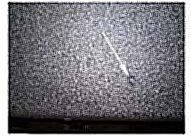

Body - Procedure to Open Liftgate If Inoperative
INFORMATIONBulletin No.: 08-08-66-004
Date: May 13, 2008
Subject:
Procedure to Open Liftgate If Inoperative in Closed Position - Service Plug Available
Models:
2007-2009 Cadillac Escalade, Escalade ESV
2007-2009 Chevrolet Suburban, Tahoe
2007-2009 GMC Yukon, Yukon Denali, Yukon XL
If the liftgate were to become inoperative while the liftgate is in the closed position use the following procedure to open the liftgate without damaging the interior trim panel. The service procedure includes drilling an access hole in the interior liftgate trim panel to release the latch. Service plugs are now available in the appropriate interior color to fill the hole.
Important:
Do not remove the liftgate interior trim panel to release the latch. Do not replace the interior trim panel.
1. Locate the dimple on the trim panel.

2. Use a 1-1/8" hole saw to drill a hole through the trim panel.
3. Use a flat-bladed tool to push down on the bellcrank lever to unlock the liftgate.
4. Push the liftgate open.
5. Install a plug in the access hole.
Parts Information
Warranty Information

For vehicles repaired under warranty, use the table.

Disclaimer